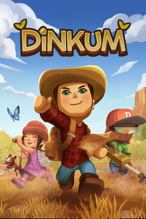
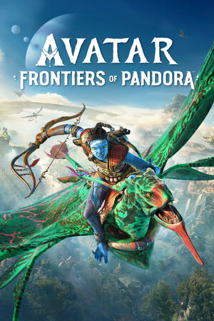
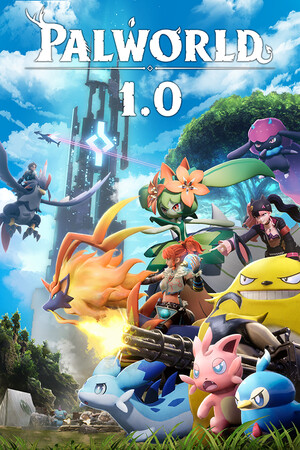
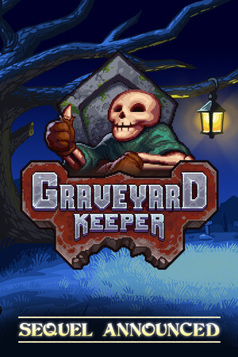
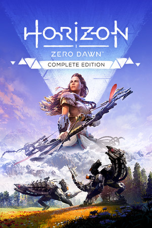
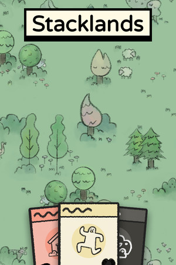
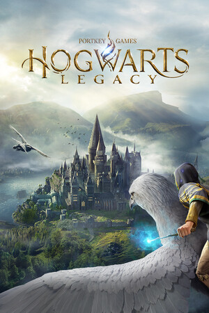

LEEONE
- 인디 포크
- 한국어
Gaming
2025 · 많이 한 게임





2024 · 많이 한 게임




Lyrics
평소에 쓴 시를 바탕으로 가사를 만들고,
AI로 음원을 만들어 보는 게 취미예요.
작곡도 조금씩 배우고 있지만, 아직은 많이 어렵네요.
Listening
턴테이블로 LP를 재생하기도 하구요, 저만의 플레이리스트로 분류해서 듣는 것도 좋아해요.
노래 부르는 것도 좋아하구요!
플레이리스트 구경하기 >
Drawing
아이패드로 그리는 디지털 페인팅부터, 아무 생각 없이 할 수 있는 명화 그리기까지요.
DIY
DIY 키트 조립을 좋아해요. 그중에서도 북눅 형태의 미니어처 DIY가 제일 좋고, 보관하기 편한 틴케이스 같은 것도 자주 골라요.
Reading
가볍게 볼 수 있는 웹소설도 좋고, 넘기는 느낌과 소리가 좋은 종이책도 좋아요. 주로 보는 건 소설이고, 판타지 · 로맨스판타지 · 현대판타지 · 무협을 즐겨 읽어요.